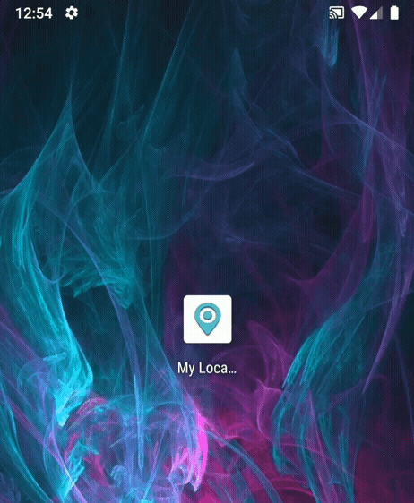
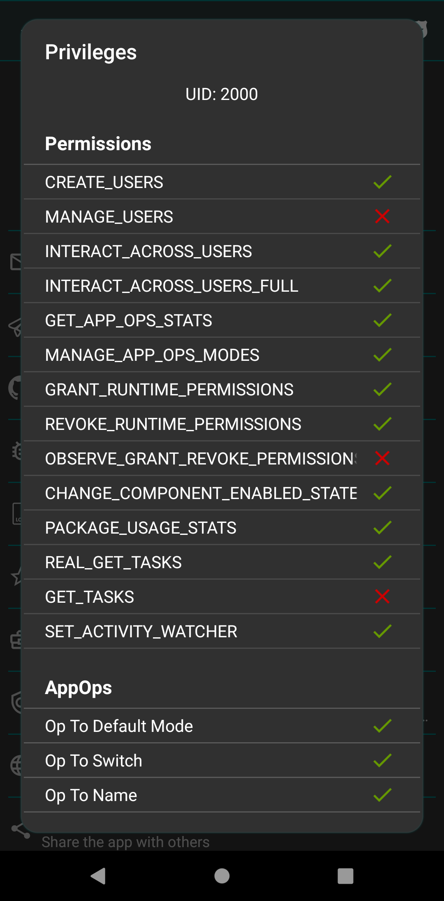

It's the eXtended Permission Manager app for Android which makes it easy to set and review desired permissions on installed apps, keeping track of any unwanted changes. Giving control on your device, it enables you to protect your privacy and save your resources like battery usage.
PMX provides all the scattered (or otherwise unavailable) permission-related information and controls on a single screen so that you can watch and control them in a comprehensive and convenient way.
Both are the underlying permission control mechanisms in Android operating system.
With every coming release both types of permissions are being tightly integrated. For instance in recent Android releases apps cannot use Microphone from background. It's achieved by making use of both manifest and AppOp permissions.
PMX shows you a complete list of manifest and AppOp permissions an app is using, in a plain simple list. So that you can know and control them the way you want.
Suppose you spent a whole Sunday setting wanted permissions on 200+ installed apps. And:
No you don't need to. You can make PMX remember your desired permission states. Set a permission, make it GREEN, and done. It will take only a few moments to look at all installed packages and figure out which permissions aren't correctly set e.g. by making a quick search: ":RED|:ORANGE" or "!:GREEN". See Search for more details.
Reference states can be backed up and restored conveniently.
Long press a permission to set or clear its reference state.
Normally package label, name and UID are searched from visible list.
Play Store version also shows search suggestions (if set in preferences) to ease the search process.
Do you want to keep track of any unwanted changes to the permissions for all the installed apps? Scheduled Check can do this for you at regular intervals (in minutes, hour or days).
Additionally, if configured in preferences, Scheduled Check can auto-revoke granted permissions with an informatory notification.
Some apps do not work without having a certain permission granted. But you want to grant the permission for the time only when you are using the app, and revoke the permission as soon as you leave the app.
Permission Watcher does exactly this. As soon as you leave the app, or after the set time has passed, it revokes an app's permissions (manifest and AppOp) on its own, or asks you to do so, depending on the preferences you've set.

Permission Watcher also notifies you to set permissions on newly installed apps (in primary user / owner profile only).
On some OEM ROMs the ADB functionality might be crippled due to lacking permissions or other restrictions. You can check the current status of what ADB can do in About -> Privileges (menu item):

Unfortunately we cannot do anything if ADB is lacking some permissions on your device. The following instructions apply only to near-AOSP ROMs.
On Android 11 and above, it's possible to turn on Wireless ADB without connecting to a PC.
Once after every reboot you need to repeat the last two steps (9 and 10).
There's no free version on Play Store.
Either Free or the Paid version can be installed on a device, not both at the same time (both have the same package name). Free version must be uninstalled before installing the Paid one, and vice versa.
Once a new version is available for update, PMX app - when launched - shows a notification to download the update (provided that you've enabled the update check in settings). Play Store app also shows update notification according to your settings.
If you've already downloaded and installed the latest release from the Telegram group, you won't get update notification in the app and Play Store won't show update available.
One can purchase the paid version just to make a donation and/or to use the paid-only features. Other methods of making a donation are available in the Free version under Donate section. Developers can also support the app development by contributing to the source code e.g. by fixing a bug or adding a feature. Users can help us make the app better by testing the beta releases, reporting any crashes or glitches, suggesting improvements and new features, or translating the app to their native language.
-
Why do I need to use PMX?
Because:
- PMX provides all the scattered (or otherwise unavailable) permission-related information and controls on a single screen so that you can watch and control them in a comprehensive and convenient way.
- There's no official tool available in stock Android to change AppOps. Only a subset of manifest permissions are exposed to user in permission settings. PMX exposes all the permissions in raw form. Related: Manifest permissions and AppOps.
- PMX makes it easy for you to keep track of any unwanted changes to permissions.
- Giving control on your device, PMX enables you to save device resources like battery and network bandwidth, and protect your privacy. You are not entirely left to the mercy of app and ROM developers. Read this article to get an idea.
- PMX can watch permission changes in realtime, reverting them automatically when you stop using an app. Or it can perform scheduled scan of permissions. So you don't have to remember things.
- PMX makes it easy for you to backup and restore permissions state of installed apps so that you don't have to tweak an app's permissions again and again.
Please also see What is PMX?
-
Why PMX requires root or ADB access?
Android won't allow a normal user app to change other apps' manifest or AppOp permissions, even its own. Only reading AppOps without root or ADB is possible provided that hidden APIs are not blacklisted on your device, which is very unlikely on Android 9+.
That's why we run a separate process with high privileges to circumvent the restrictions.
By default, the background process (daemon) is run with ADB UID (2000) or (if rooted) System UID (1000). On rooted devices UID can be changed in Advanced Settings.
-
My device isn't rooted. How can I use PMX?
Use PMX with ADB. Please do read the note at the start. There might be some limitations on some devices.
-
How does PMX change other apps permissions?
PMX itself cannot and does not grant or revoke other apps' permissions. In fact no third party app is privileged to do that. It's the Android OS which controls apps' permissions. PMX just sends a request to the Android framework to change a permission's state. Now it's entirely up to Android how much it honors our request. Not all permissions are changeable. And if you are not able to change a permission's state using PMX, you won't be able to change it in any other way either.
-
I've changed a permission but it's not working. Why?
After changing a permission successfully, if you are not getting the desired results, it's the Android operating system to be blamed. Please see How does PMX change other apps permissions?
-
Why do some permissions revert to their old state soon after changing them?
Usually they are AppOp permissions. Some AppOps are only used by Android for compatibility (e.g. LEGACY_STORAGE) and they don't actually control anything. If we explore their underlying working it's revealed that granting / revoking such permissions doesn't make sense.
Some permissions cannot be changed if the app is targeting old Android version. Also some OEM ROMs behave weird when it comes to AppOps. We do not know exactly what changes your OEM has made to the stock AOSP code. That's why the statement on Github and Play Store: "The app is tested on stock Android 7-11. Some highly customized ROMs may behave unexpectedly."
Actually there come many more explanations if we dig every app and permission individually (which doesn't sound practical). As stated above, PMX doesn't change other apps' permissions on its own, so even if for some unknown reason Android doesn't change a permission, or reverts it back immediately, there's nothing we can do to force it because these are the limitations at Android end. Rather, I should say this is how Android works.
Related: What are different AppOp modes and which one should I use?
-
Do the permissions remain changed after ADB is turned off, or root is denied, or PMX is uninstalled?
PMX itself cannot and does not grant or revoke other apps' permissions. In fact no third party app is privileged to do that. It's the Android OS which controls apps' permissions. PMX just sends a request to the Android framework to change a permission's state.
So once a permission is changed, it makes no difference if you uninstall PMX or drop its privileges. The permission remains in whatever state it is, unless changed again by you or the operating system.
-
What are hidden APIs in Advanced Settings?
The core functionality of PMX revolves around Hidden APIs. These are the capabilities required to perform tasks (like granting / revoking permissions) which can only be performed by privileged system apps. So these capabilities aren't available to normal user apps. But PMX uses these capabilities with the help of root or ADB. If "Use Hidden APIs" is checked, the app tries to use some of these capabilities without the help of root or ADB. But this is not very likely to work on Android 9+, so the box is auto-unchecked. Usually a user should not be concerned about this.
If you are interested in underlying details please read here.
-
What should I select for Privileged Daemon UID in Advanced Settings? System or ADB?
It matters only if you are using root, or ADBD on your device is running with root (which is not the case with the final user devices).
Preferably use System (UID 1000) as it allows more privileges than ADB (UID 2000). E.g. changing "System-Fixed" permissions is possible only when running as system.
-
Why don't I see XYZ app in packages list?
Please check Exclusion Filters. Almost all the stock Android packages are excluded by default. You can exclude / include any package you want from / to visible list.
-
Why don't I see XYZ permission in ABC package?
Please check Exclusion Filters. Permissions which are not changeable are excluded from the visible list by-default.
-
Why don't I see XYZ AppOp in ABC package?
Please check Exclusion Filters if XYZ AppOp is excluded from the visible list. Or ABC package might not be using XYZ operation. You don't need to be worried about this.
But if you want to see the XYZ AppOp for all apps, go to Exclusion Filters -> Extra AppOps, never excluded and check XYZ AppOp in the list.
For instance, write _CLIPBOARD in search box (with Deep Search box checked) and you'll get all apps which used (or tried to use) READ_CLIPBOARD or WRITE_CLIPBOARD permission. Timestamp is also shown (but not for all AppOps).
So if the app you are concerned about isn't in the search results, check both AppOps in the Exclusion Filters list mentioned above.
-
What are invalid permissions in Exclusion Filters?
If an app is requesting a manifest permission but it's not declared (provided) by Android framework or any of the installed packages, it's an invalid permission. For instance "com.android.vending.BILLING" is an invalid permission if Play Store app is not installed on your device.
-
What are extra AppOps in Exclusion Filters?
Not all AppOps are being used for all installed apps. But you can enforce an AppOp to any app. Selected Extra AppOps appear in all apps' permission lists so that you can set them.
-
What are different AppOp modes and which one should I use?
Normally you should Allow or Ignore. Or you may want to allow an operation only when the app is in Foreground (only on Pie+). Deny is the intense version of Ignore which may crash the requesting app. Default is the system's default behavior which differs for different AppOps.
Please note that not every AppOp mode can be possibly set on every AppOp for every app. For instance on recent Android releases CAMERA and MICROPHONE are allowed to be used by user apps only in foreground (even if set mode is Allow). Similarly, some AppOps can never be set to Foreground mode.
Related: Why do some permissions revert to their old state soon after changing them?
Official documentation: AppOpsManager.
-
What's the difference between Ignore and Deny AppOp modes?
Ignore silently fails while Deny throws back an error to the app which the app might not be expecting and may crash. You should normally be using Ignore.
-
What does READ_MEDIA_AUDIO permission do?
READ_MEDIA_[AUDIO|VIDEO|IMAGES] are recent addition to AppOps list, added in Android 10 (IIRC) as a part of Android's Scoped Storage implementation. Source code states: Read media of audio type. In simple terms it controls apps (which use MediaStore) access to audio files in external shared storage.
-
What does WAKE_LOCK permission do?
Apps hold wakelock to keep the device awake i.e. not entering Doze mode.
-
Why can't I change XYZ permission?
Manifest permissions with only Dangerous protection level (and a few others) are changeable. AppOps not dependent on some other AppOp are changeable. That's how Android works, we can't change the behavior. See Manifest permissions and AppOps.
Additionally, PMX protects some critical framework apps and permissions; changing them might brick the device. See the related question.
-
How can I change INTERNET permission?
Android doesn't allow changing all permissions, like those with the Normal protection level (e.g. INTERNET) or those with Fixed flag or Signature protection level (usually System or Framework apps). See Manifest permissions and AppOps.
-
How can I change System-Fixed permissions, Signature|Privileged permissions, or the permissions of framework apps?
In Play Store version you can "Allow Critical Changes" in Advanced Settings to make changes to the permissions with the System-Fixed flag, protection level Signature|Privileged, or those of framework app. But it's not recommended to play with the System and Framework apps. You can brick your device.
-
What is UID mode in AppOp permissions?
It's a mode of an AppOp permission which indicates that changing this AppOp will also affect other apps (with the same UID), if installed. See sharedUserId.
-
Why do I get a lot of Bad ROM popups?
OEMs make huge changes to stock AOSP code (which is developed by Google). So the AppOps framework on some custom / OEM ROMs returns unexpected results which PMX cannot understand. You can ignore these popups, but they mean that the functionality is somewhat limited.
-
What does the "Exclude" button (on long press) do?
"Exclude" just hides the permission from the visible list. If you don't want to change a permission for any app, you may just "Exclude" it. And it won't appear for any app. To unhide it again go to Exclusion Filters settings.
Similarly, you can exclude an app from the visible list if you are not concerned about its permissions.
-
Why does scanning apps takes so long?
PMX gets a lot of information about apps. It includes package label, name, icon, UID, and its state (framework, system, user, disabled). For manifest and AppOp permissions the information includes permission name, state (granted, revoked, allow, ignore, deny, foreground, default), protection level (normal, dangerous, signature, development, privileged, fixed, AppOp) and AppOp's last access time. Then the set value of every permission is compared with the reference value and the reference state is decided (red, green or orange). After scanning all the permissions for every app, the count of visible vs total permissions and app's reference state is also shown in package information.
You can turn on Quick Scan in settings to disable permissions scan. Or exclude as much information as you can in Exclusion Filters to speed up the scan process. Speed also depends on how much CPU and RAM your device spares for the apps. ROMs investing more on UI (like MIUI) are slower.
-
Is there a complete list of all permissions available with explanation?
There's no complete list of permissions with description, at least in my knowledge. For some manifest permissions there is a brief description available which is shown when you tap a permission name in PMX app. For AppOps there's no description provided in Android.
There are third part resources like this one by Izzy. Android's official developer site and source code are also good sources for learning. With every new Android release some new permissions are added, and some also get obsolete. Also, not all permissions are needed to be taken care of by every user.
-
How to use the app in work profile / multi-user environment?
Play Store version supports work profiles and multiple users. Select a user from drop-down menu.
-
How can I translate PMX to my language?
Join the translators team on Crowdin. Let me know which language you are interested in and I'll add that to the project.
Major translators will be credited by adding their names to the app in About section.
-
Are you going to add Shizuku support to PMX?
No. It's not currently planned.
-
How does PMX compare to XPrivacyLua? Can they replace each other?
PMX is not designed to replace but to compliment projects like XPrivacyLua. They have different design goals.
XPrivacyLua hacks Android's standard functionality by hooking into internal APIs, using Xposed which replaces some Android libraries with the hacked ones. So we get extra functionality like feeding fake data to the apps and get notified of permission related events which we cannot know of by any other normal means.
PMX on the other hand is not targeted to be a framework mod. It provides convenient access to some privileged APIs which normal apps cannot use. It's not hacking Android's standard functionality by any means. Most of the tasks PMX performs can also be performed from commandline, except a few like changing System-Fixed permissions.
Rooting and Xposed are two strict requirements for using XPrivacyLua. PMX doesn't require any of the both for the most part. Both aren't available for many devices or many users don't consider them as an option due to the technical difficulties involved, warranty void, SafetyNet failing and other issues.
Here's a related issue.
-
Can PMX auto remove permissions when an app is closed, like Bouncer does?
Yes. See Permission Watcher and Scheduled Check. But it doesn't use Android's Accessibility feature to perform taps / clicks on screen on user's behalf (though it's a good feature without requiring any extra setup). PMX relies on root or ADB privileges. So it can do far more (see What is PMX?) than what can be done using Accessibility features.
If you are using ADB, and not root, Permission Watcher may not work on some devices. Please read the note given at the start of Using PMX with ADB.
-
Can I get notified when a new app is installed?
Yes. See Permission Watcher.
Since Android 8 it's not possible for background (not running) apps to get notified of the new app installed event. So we've to run a foreground service (with persistent notification) to receive this event. Or you may consider using Scheduled Checks to keep things in place.
-
When a new app is installed, can PMX drop its permissions by default?
Yes. But there's nothing to drop. All the revocable manifest permissions are already revoked and stay revoked unless the user grants them explicitly. As far as AppOps are concerned, many of them don't appear until at least once used by the app e.g. VIBRATION and READ_CLIPBOARD. Many others (e.g. READ_CONTACTS) have their corresponding manifest permissions already dropped, as pointed out. So it's not predictable at the time of app installation which AppOps should be removed.
But a notification is displayed when a new app is installed (if using Permission Watcher) so the user can set permissions one by one or apply a profile (upcoming feature).
-
Why PMX requires INTERNET permission?
As clearly stated in app description: android.permission.INTERNET permission is required to make use of ADB over network. The only connections made outside the device are to check for updates (which you can disable in app settings) and to fetch help contents (this webpage).
-
How much privacy friendly PMX is?
We are not interested in you or your device. PMX is open source. You can go through the source code on Github. There's nothing hidden from the end user. We believe in our users being educated and well-informed of why they are using PMX. We respect your privacy, so no data is collected ever, even the crash logs. You may also want to see our Privacy Policy.
-
Is PMX spying on me using ADB over network?
No.
PMX talks to adbd process over localhost (127.0.0.1). But there's no way to start adbd listen on localhsot only, and not on other network interfaces (because ADB is meant to be used externally from a PC). You can surely stop adbd listening from external IP addresses, if you can. PMX would still work, without any port being exposed externally.
Also you can change 5555 port to whatever number you want in Advanced Settings. It's not hard-coded.
Also ADB since Android 4.2 is meant to be protected with RSA key authentication (one of the strongest authentication mechanism). So even if the device is accessible from internet (which is highly unlikely), no one can make an ADB connection without authentication.
You can verify these claims in whatever way you want. We are here to assist you technically.
-
Is PMX misusing root privileges to collect my data?
We believe in the principle of the least privilege. But due to the restricted nature of Android operating system, PMX cannot function without having high privileges. What we can offer is, if you are a tech-savvy person, we can teach you how to make it difficult for apps to make internet connections, even with root privileges.
-
I think PMX is useless. Why was it created?
You are correct. PMX is not for everyone (and that's why it wasn't polished and released to public for years because we knew we've a very small audience). It's only for some extra tech-savvy souls who are extra-conscious about their privacy and device control. Majority of the phone users are just in the hands of their OEMs and app developers. They aren't aware of what's being done to them and their data. And it's fine.